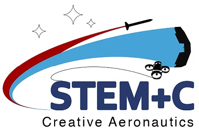

Esteban Park FRIA Application Status
- Reference Number: 2023-CBO-02980-FRIA
- Submitted By: Shawn Quinn on 11/09/2023
- Approval Date: 11/20/2023
- Expiration Date: 11/20/2027
FRIA Polygon boundary Points
- 33.39959, -112.00603
- 33.39959, -112.00295
- 33.39878, -112.00408
- 33.39908, -112.00491
- 33.39836, -112.00526
- 33.39881, -112.00628
- 33.39935, -112.00609
FRIA Diagram: